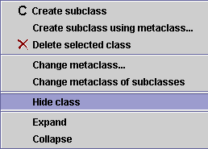
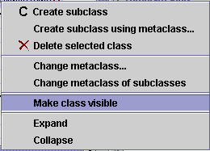

Hiding a
Class
Hiding a
Class

You can make a class hidden using the Class Menu.
You can use this, for example, if you want to restrict the user's view to a part of your
knowledge base but want to retain the structure of the larger project. All
subclasses of a hidden class are also hidden.
You can choose whether or not hidden classes are displayed
in the Class Relationship pane by choosing Configure from the Project menu,
going to the Options tab, and toggling the Display Hidden Classes option.
See Configuring a Project for
more information.
To hide a class:
- Select the class in the Class Relationship Pane.
- Click the right mouse button to display the Class Menu.
- Select Hide class and click the left mouse button.

- If hidden classes are visible in your project, you will see an
 icon to indicate the class is hidden. If hidden classes are not visible in
your project, you will no longer see the class.
icon to indicate the class is hidden. If hidden classes are not visible in
your project, you will no longer see the class.
To make a hidden class visible:
- If hidden classes are not currently dsiplayed in the project, make them
visible. To do this, choose Configure from the Project menu,
select the Options tab, and make sure the Display Hidden Classes
option is selected.
- Select the hidden class you wish to make visible. You will know it is
hidden because of the
icon.
- Click the right mouse button to display the Class Menu.
- Select Make class visible and click the left mouse button.

- The icon will be removed
from your class. Now, if you choose not to display hidden classes, you will
still be able to see the class, unless it has a superclass which is still
hidden.
Next: Replacing a Superclass
Classes Table of Contents